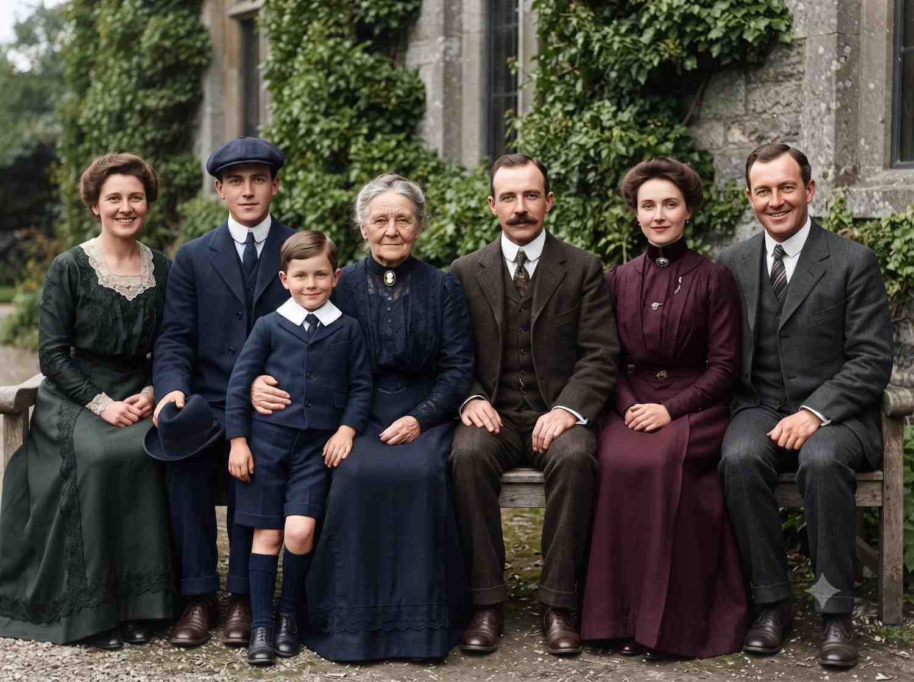

Photo restoration prompt
Retro film restoration
Repair damage and add natural color while keeping the character and composition of an old photograph intact.

Copy this prompt
Restore and colorize this old, faded photograph. Repair scratches, dust, and creases, sharpen fine detail on the faces, and apply natural, historically accurate skin tones and clothing colors. Keep the original grain and composition; do not alter anyone's face shape or expression.
How to use it
- Upload a high-quality scan of the original photograph.
- Use an image-editing tool that can work from the uploaded image.
- Review faces, clothing, and fine details to ensure the restoration stays faithful.